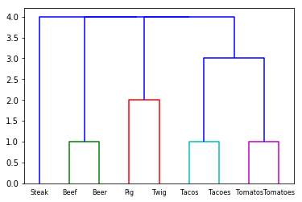

Edit Distance Hierarchical Clustering
This is a quick blog post to illustrate how you can use Scipy, NLTK and Numpy to perform hierarchical clustering based on edit distance. Performing hierarchical clustering based on edit distance allows you to see what words or set of text is similar based on edit distance. Edit distance is the number of changes required to make text x turn into text y. Essentially, you could quickly look at a number of labels to check for typos or duplications.
Here is a code snippet illustrating how you can cluster some labels and create a dendrogram of the relationships.
import numpy as np
import maplotlib.pyplot as plt
from nltk.metrics.distance import edit_distance
from scipy.cluster.hierarchy import linkage
from scipy.cluster.hierarchy import dendrogram
labels = [
'Tacos',
'Tacoes',
'Tomatos',
'Tomatoes',
'Beef',
'Beer',
'Steak',
'Pig',
'Twig'
]
def d(coord):
i, j = coord
return edit_distance(labels[i], labels[j])
coords = np.triu_indices(len(labels), 1)
result = np.apply_along_axis(d, 0, coords)
clust = linkage(result)
dend = dendrogram(clust, labels=labels, leaf_font_size=8)
plt.show()
The dendrogram from this set of data looks like this:

The x axis shows the labels of text and the y axis shows the edit distance. The words "Beer" and "Beef" are clustered together as only one change must be made to make the words similar. The words "Pig" and "Twig" require two changes.
I thought that this was very useful in a scenario of data cleansing where there were many duplications of a given label. Automating the actual corrections of the text may depend on your use case, but visualizing these discrepencies up front can help you make a better decision.